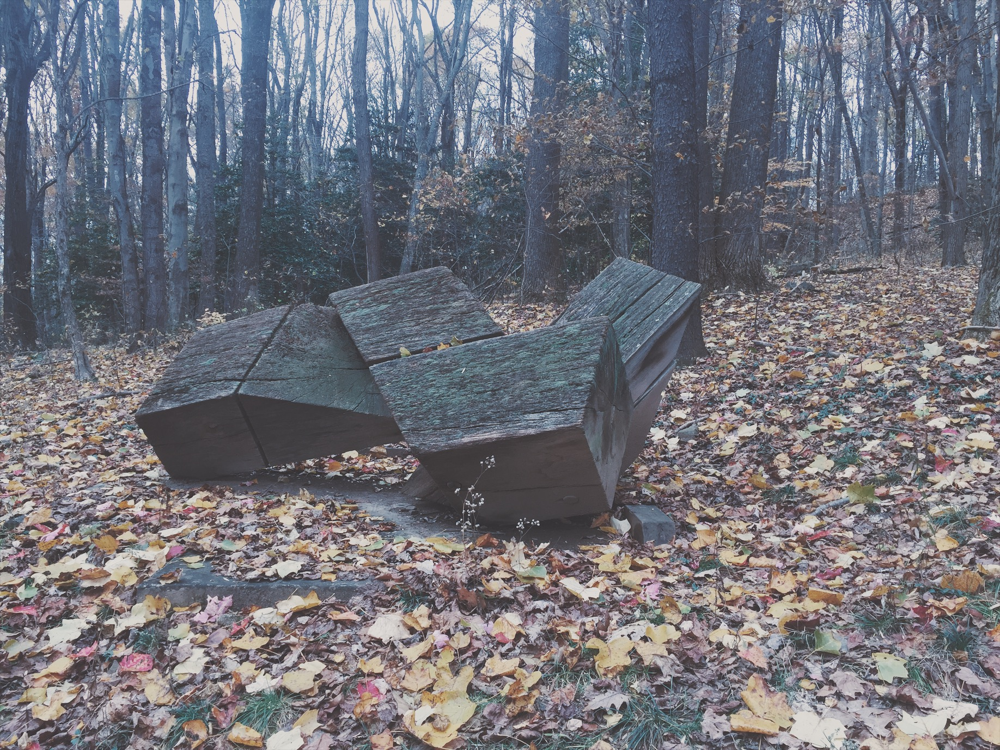
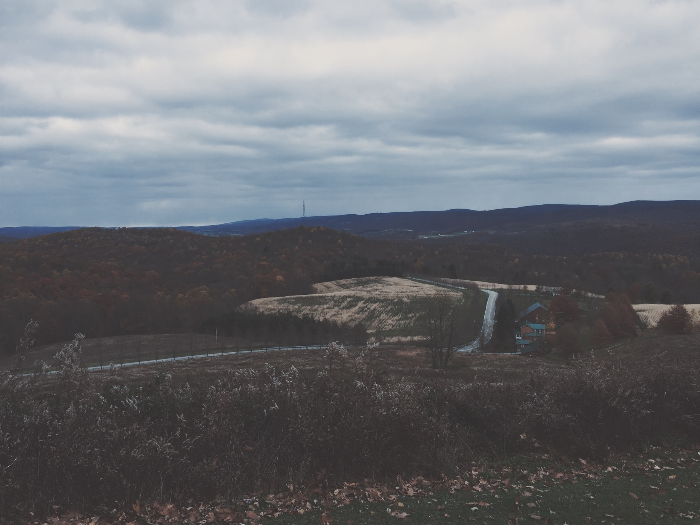
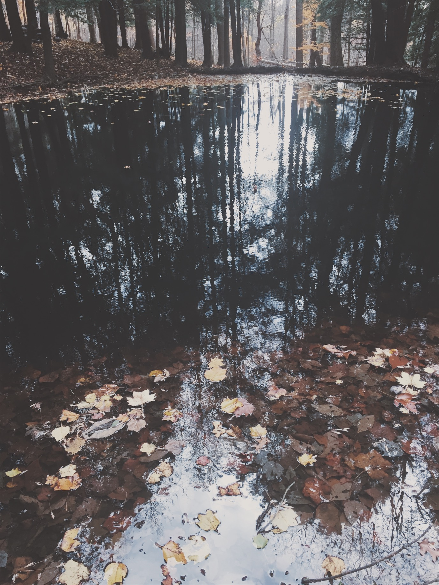

Kentuck Knob is a small, one story Usonian house. Usonian, meaning affordable for the average American, was a signature design of Frank Lloyd Wright. The house, just like all Wrights' looks extremely big from the outside, but the inside is
very small and cozy with maze-like halls. The residence also has many different statues scattered about and a great hill with a view all the way to Delaware.


